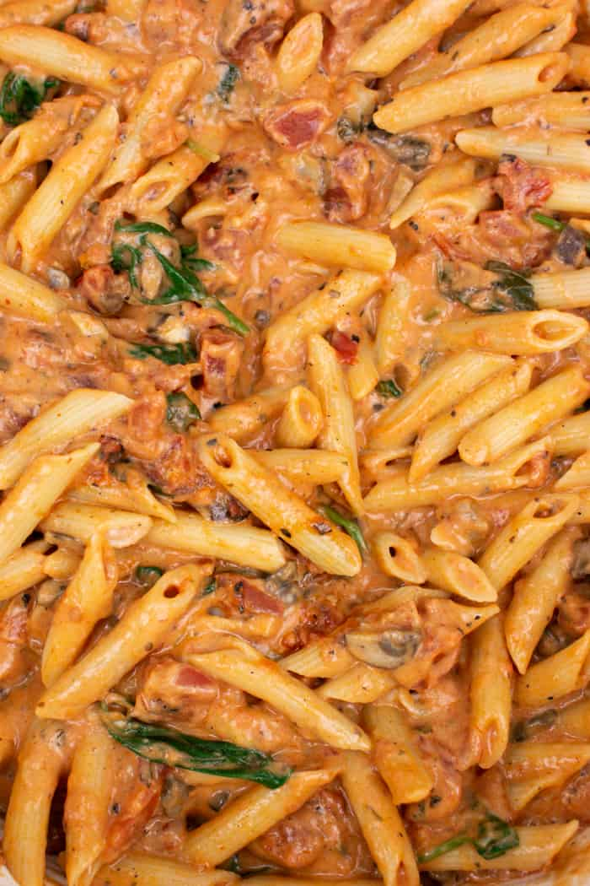

Penne Rosa with Parmesan Crusted Chicken

Penne rosa features pasta and Parmesan chicken topped with a rose-colored tomato cream sauce with red pepper flakes, mushrooms, and spinach. I serve this dish with a fresh Caesar salad.
Ingredients
- 1 (16 ounce) package penne pasta
- 3 large egg whites, lightly beaten
- 3 cups grated Parmesan cheese, divided
- 4 skinless, boneless chicken breast halves
- 2 (16 ounce) jars Alfredo sauce
- 2 (14.5 ounce) cans Italian-style diced tomatoes
- 1 (8 ounce) can tomato sauce
- ¼ teaspoon red pepper flakes, or to taste
- 1 (8 ounce) package sliced fresh mushrooms
- 1 (8 ounce) package fresh spinach
Steps
- Preheat the oven to 400 degrees F (200 degrees C). Line a baking sheet with parchment paper.
- Fill a large pot with lightly salted water and bring to a rolling boil over high heat. Cook penne in boiling water, stirring occasionally, until tender yet firm to the bite, about 11 minutes. Drain.
- Meanwhile, add beaten egg whites to a shallow bowl. Place 2 cups Parmesan cheese into a second shallow bowl.
- Dip chicken into egg whites. Press chicken into Parmesan cheese to coat both sides. Gently toss between your hands, so excess cheese falls away. Place coated chicken on the prepared baking sheet.
- Bake chicken in the preheated oven until no longer pink in the center and the juices run clear, about 18 minutes. An instant-read thermometer inserted into the center should read at least 165 degrees F (74 degrees C).
- Meanwhile, heat Alfredo sauce, diced tomatoes, tomato sauce, and red pepper flakes in a large saucepan over low heat. Allow sauce to simmer while you finish the remaining steps.
- Heat a large skillet over medium-high heat; cook and stir mushrooms and spinach in the hot skillet until mushrooms are tender, about 5 minutes. Stir vegetables into sauce.
- Place cooked penne into a serving bowl; slice chicken into small pieces and arrange over pasta. Pour sauce over pasta and chicken. Sprinkle with remaining 1 cup Parmesan cheese.